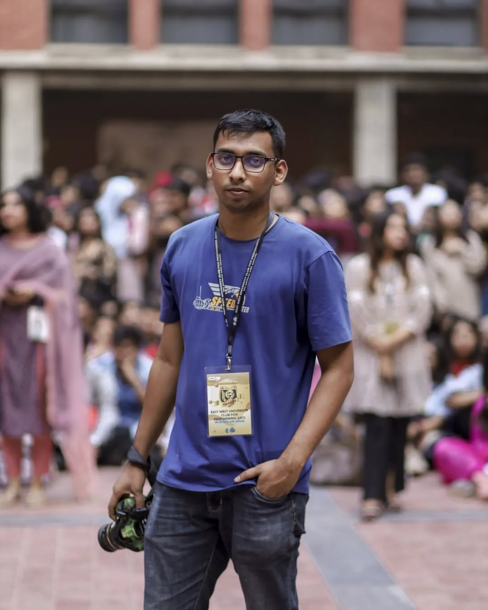

Photography for me began as an innate desire to freeze time. What fascinates me most is that every shutter click captures a fleeting moment of human emotion that will never repeat itself — impossible to recreate, yet immortalized forever in light and shadow.
Over the years, my work has evolved around emotive portraiture, cultural youth documentary (Scouts and ECPA), and fine art street narratives. I believe the greatest photographs don't come from stiff poses, but from creating a comfortable, authentic atmosphere where someone's true essence and vulnerability shine through.
Beyond the camera, I am passionate about color science. In post-production, I develop custom color grades inspired by analog film stocks — warm Kodak Portra tones, rich shadows, and gentle skin tones that feel nostalgic, cinematic, and timeless.
The precision glass, full-frame bodies, and digital darkroom suite used to bring visions to life.
Full-frame sensor delivering rich dynamic range, exceptional color fidelity, and natural skin tone rendering even under demanding natural light.
My primary storytelling lens. Replicates natural human vision perspective with razor-sharp subject isolation and gorgeous wide-aperture low-light rendering.
Flattering facial compression, creamy background separation, and exceptional micro-contrast tailored for fine art and classical portraiture.
Bespoke film emulation profiles, frequency separation skin retouching, and meticulous color grading for gallery exhibition standards.
Real human emotion over stiff poses. The unscripted laughter and reflective glances create the truest art.
Whether harnessing dramatic golden hour sun or moody shadow play, light dictates the emotional pulse of the frame.
Avoiding fleeting filter trends. Color grading and composition designed to look as striking 20 years from today.